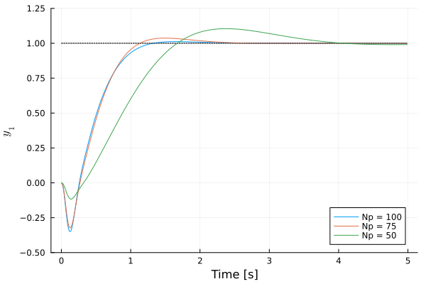
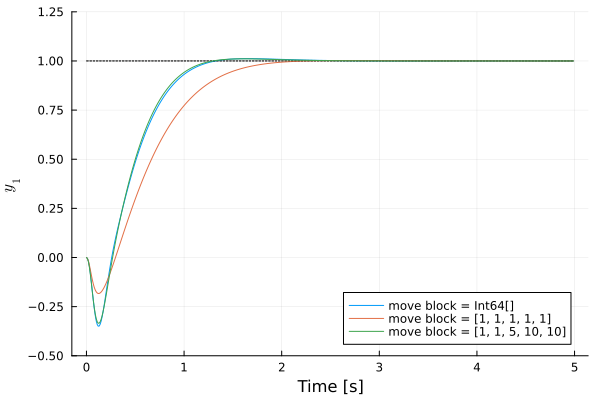

Move Blocking
A distinguishing characteristic of MPC compared with more classical control strategies such as PID or LQR is that it can be computationally demanding. For real-time applications, this can be a limiting factor.
One way of reducing the computational complexity is to reduce the number of decision variable in the MPC. This can be done by reducing the prediction horizon, but this can reduce the performance of the controller significantly (as is shown in the example below.)
Another way is to "block" some of the controls by holding them constant over more than one time step, which is known as "move blocking"[Cagienard07]. If the blocks are selected wisely, the performance of a longer horizon may remain, while the decision variables are reduced significantly.
In LinearMPC.jl, controls can be blocked with the function move_block!. The function takes in a vector that defines how the control decisions should be held. For example, one can hold the control for 3 time steps, then 2 time steps, then 1 time step, then 4 time steps with
move_block!(mpc,[3,2,1,4])If the sum of the blocks add up to less than the prediction horizon, the last block will be extended to cover the entire horizon. For example, if Np = 10, the call move_block!(mpc,[2,4]) will result in the move blocks [2,8].
If the sum of the blocks add up to more than the prediction horizon, the last blocks will be clipped until the remaining blocks add up to the prediction horizon. For example, if Np = 10, the call move_block!(mpc,[2,4,6,3]) will result in the move blocks [2,4,4].
One can also enter a set of evenly spaces blocks that covers the entire horizon. For example, if Np=10, the call move_block!(mpc,2) will result in the move blocks [2,2,2,2,2].
Example
Consider the example of the control of an inverted pendulum on a cart, which is predefined as one of the examples in LinearMPC.jl and can be accessed with the call mpc_examples. We consider the case when we want the first output (the position of the cart) to reach a certain value (1 m to be specific.) Below we create three different MPC controllers with different prediction horizons and show the resulting step responses.
using LinearMPC,Plots
tsolve, plt = zeros(3),plot();
for (k,Np) in enumerate([100,75,50])
mpc,_ = LinearMPC.mpc_examples("invpend",Np)
tsolve[k] = @elapsed sim = LinearMPC.Simulation(mpc;r=[1,0],N=500);
plot!(plt, sim,yids=[1],uids=[], color = k, label="Np = "*string(Np))
end
plot!(plt,ylims=(-0.5,1.25))
As can be seen, the higher the prediction horizon, the faster the setpoint is reached. (Note that for even lower values of the prediction horizon, the resulting closed-loop system becomes unstable.) The cost of the horizon can, however, be seen in the solve times, where the solve times are about four times slower for $N_p = 100$ compared with $N_p = 50$.
To reduce the computation time, we consider three different move blocks. We consider the case of no move blocks (which an empty vector of move blocks encodes,) of evenly spaced move blocks [1,1,1,1,1] and a more dynamics set of move blocks [1,1,5,10,10]. For all of the cases, we consider a prediction horizon of $N_p = 100$. The resulting step responses are shown below.
using LinearMPC,Plots
mpc,_ = LinearMPC.mpc_examples("invpend",100)
tsolve, plt = zeros(3),plot();
move_blocks = [Int[], [1,1,1,1,1], [1,1,5,10,10]]
for (k,mb) in enumerate(move_blocks)
move_block!(mpc,mb)
tsolve[k] = @elapsed sim = LinearMPC.Simulation(mpc;r=[1,0],N=500);
plot!(plt, sim,yids=[1],uids=[], color = k, label="move block = "*string(mb))
end
plot!(plt,ylims=(-0.5,1.25))
As can be seen, the adaptive move block almost performs as well as using no move blocks. The main difference is that when no move blocks are used, there are 100 decision variables, while for both the move blocks [1,1,1,1,1] and [1,1,5,10,10] there are only 5 decision variables. This can be seen in the solution times, where both of the move blocks leads to solution times that are about 6 times faster (note that the actual speedup is even higher due to some overhead from the simulation.)
- Cagienard07Cagienard, Raphael, et al. "Move blocking strategies in receding horizon control." Journal of Process Control 17.6 (2007): 563-570.